INTRODUCTION
- Horticulture is the science and art of cultivating plants,particularly those grown for ornamentalpurpose,food production,medicine use.
- It involves the study and practice of plant cultivation,propagation,breeding and management.
- It includes the cultivation of fruits,vegetables,nuts,seeds,herbs,sprouts,mushroom,algae,flowers,seaweeds and non-food crops such as grass and ornamental tress and plants.
- It also includes plant conservation,landscape restoration,landscape and garden design,construction and maintenance and arboriculture,ornamental trees.
- Horticulture involves the use of hand tools such as digging sticks,hoes and carrying baskets.
- Horticulture plays a significant role in agricuiture,environment conservation and human well-being.
- It combines scientific knowledge with practical skills to enhance plant growth,yield and aesthetic appeal while promoting sustainable and environmentally responsible practices.
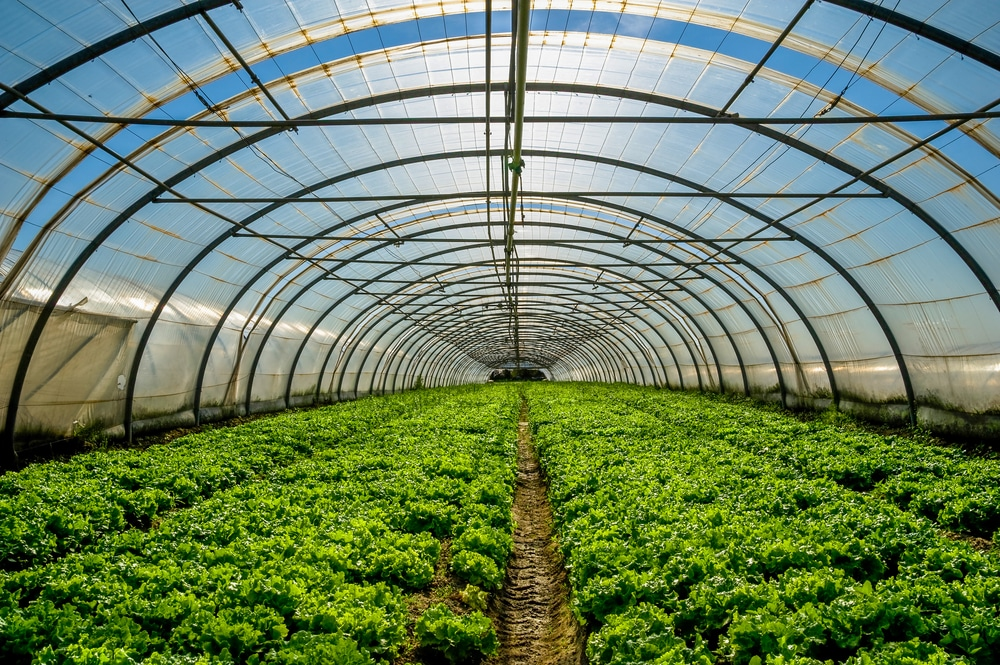
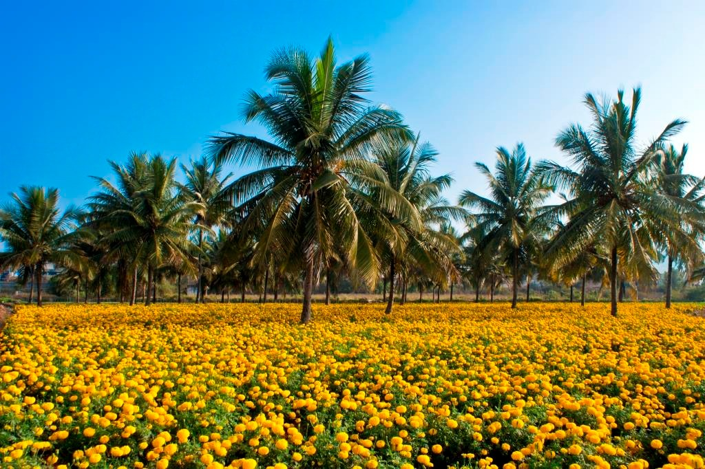
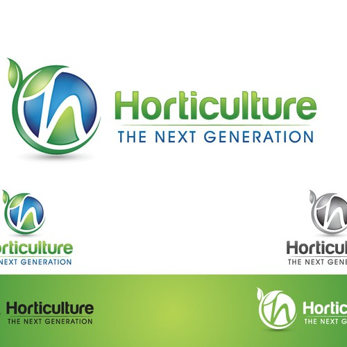
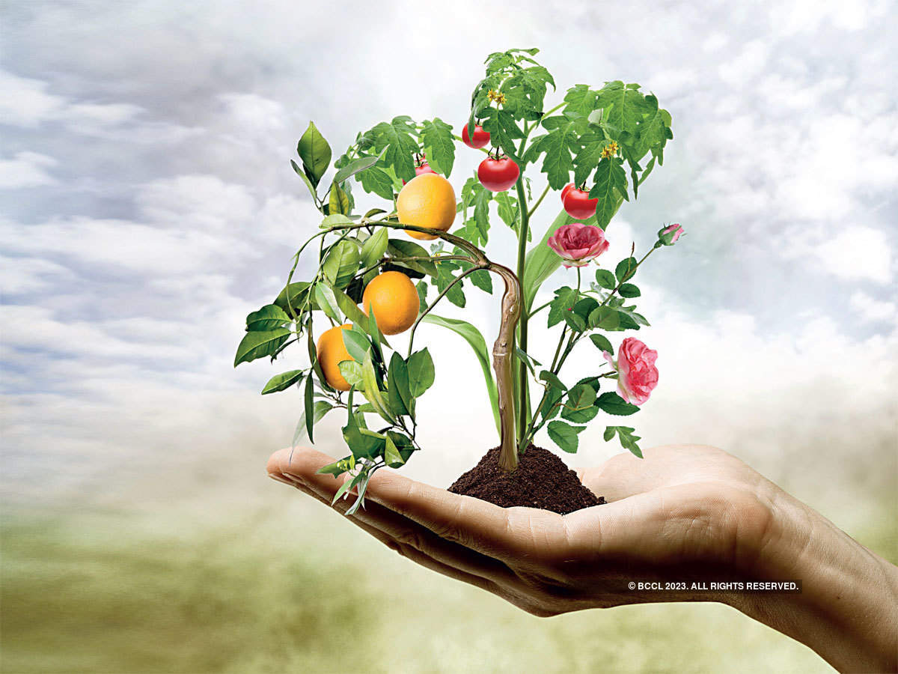
TYPES OF HORTICULTURE
- OLERICULTURE: It is the branch of horticulture that focuses on the production of vegetables.
- POMOLOGY: It is the branch of horticulture that deals with the cultivation of fruits crop.
- FLORICULTURE: It is the branch of horticulture that involves the cultivation and management of specifically flowers and flowering plants.
- ARBORTICULTURE: It focuses on the cultivation ,management and care of trees,small groups of trees.
- VITICULTURE: It is the branch of horticulture that involves the cultivation of grapes for winemaking.
- LANDSCAPE HORTICULTURE:It is concerned with the design ,installation and maintenance of outdoor spacessuch as gardens ,park,urban landscape.
- MEDICINAL HORTICULTURE: It includes the cultivation and management of medicinal herbs,plants with therapeuticproperties and botanical extracts in modern medicines.
There are several types of horticulture,each focusing on different aspects of plant cultivatioin and production.
CHALLENGES
- CLIMATE CHANGE: Rising temperature ,eratic weather patterns and changes in precipitation can affect crop growth,flowering ,fruitset and overall productivity.
- WATER SCARCITY: Especially in regions with limited water resource.Adequate water availability is crucial for plant growth and development.
- PESTS AND DISEASES: Hprticulture crops are susceptible to various peste and diseases,which can cause significant damage and yield losses.
- LABOUR SHORTAGE: The horticulture industry often faces labour shortages particulary during peak seasons such as planting and harvesting.finding and retaining skilled workers for tasks such as pruing,harvesting,crop maintenance can be challenging.
COMMUNITY SERVICE PROJECT
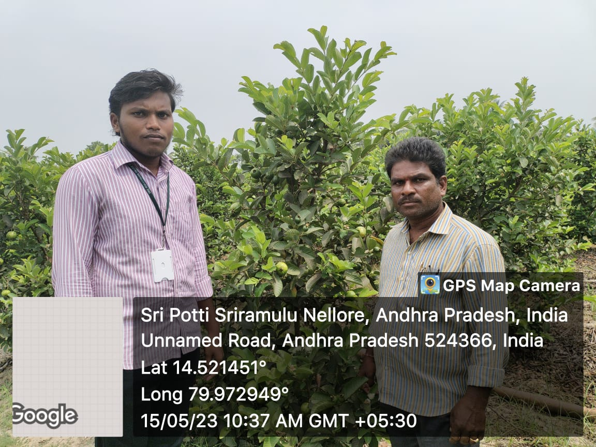 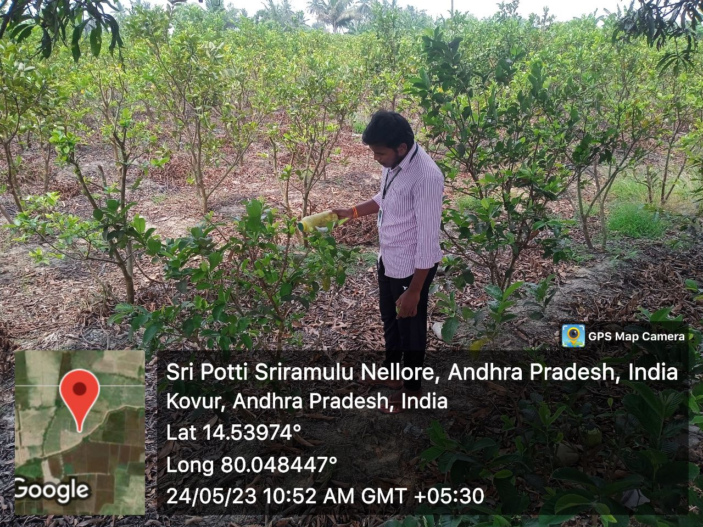 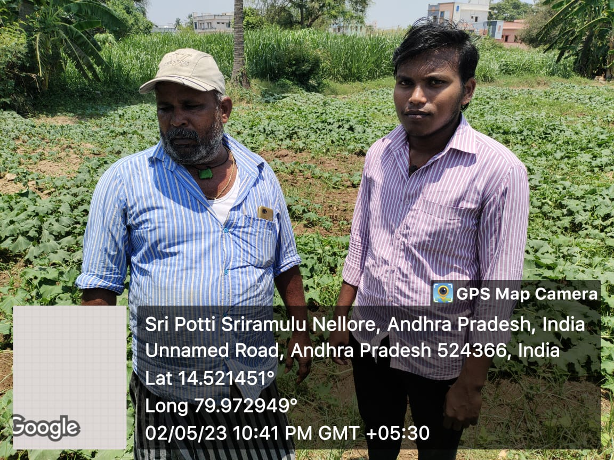 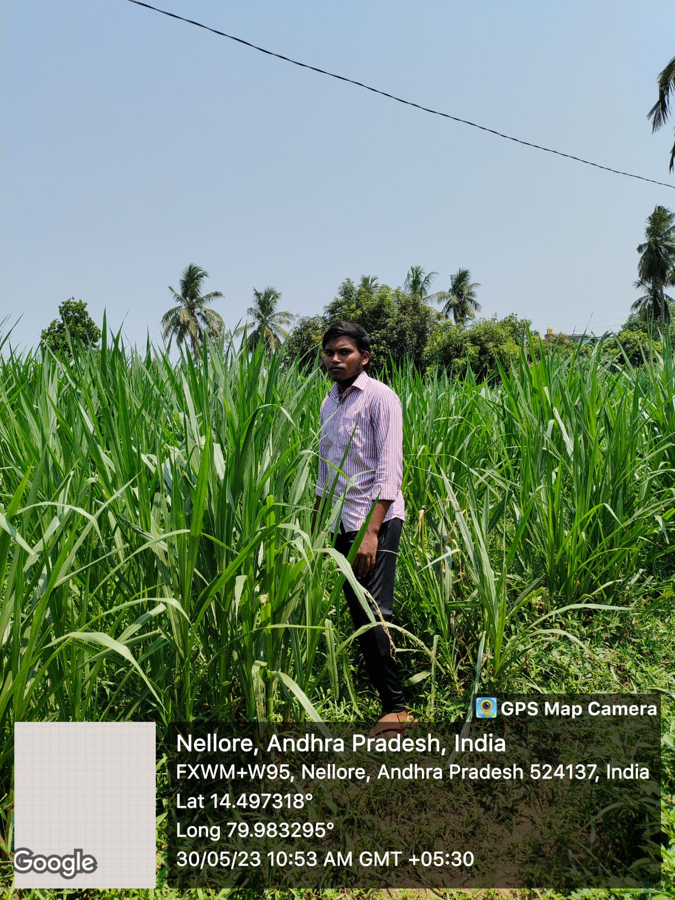| WEEKLY ACTIVITY | |||
|---|---|---|---|
| S.No | Week | Location | Activity done |
| 1 | Week-1 | Kovur |
|
| 2 | Week-2 | Kovur |
|
| 3 | Week-3 | Kovur |
|
| 4 | Week-4 | Kovur |
|
| 5 | Week-5 | Kovur |
|
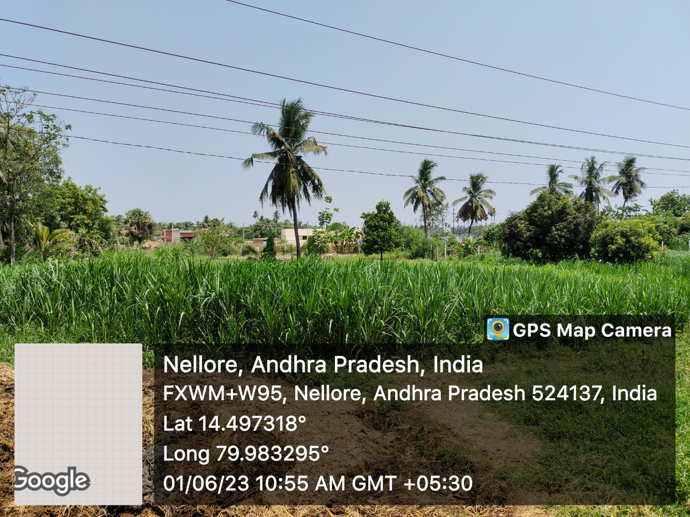 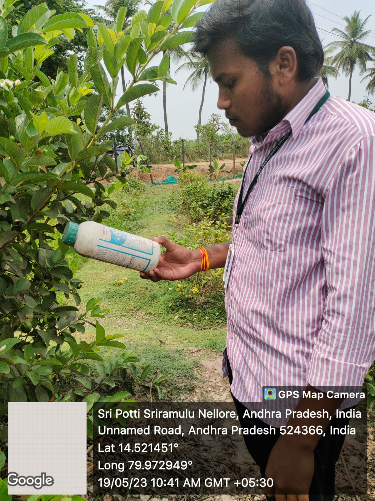 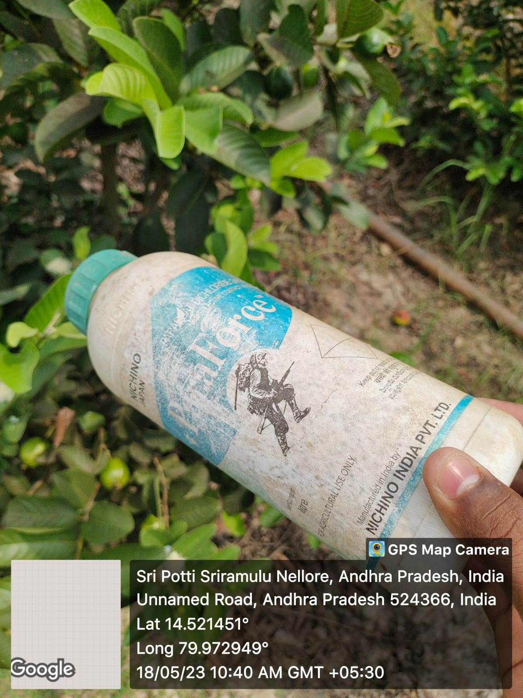 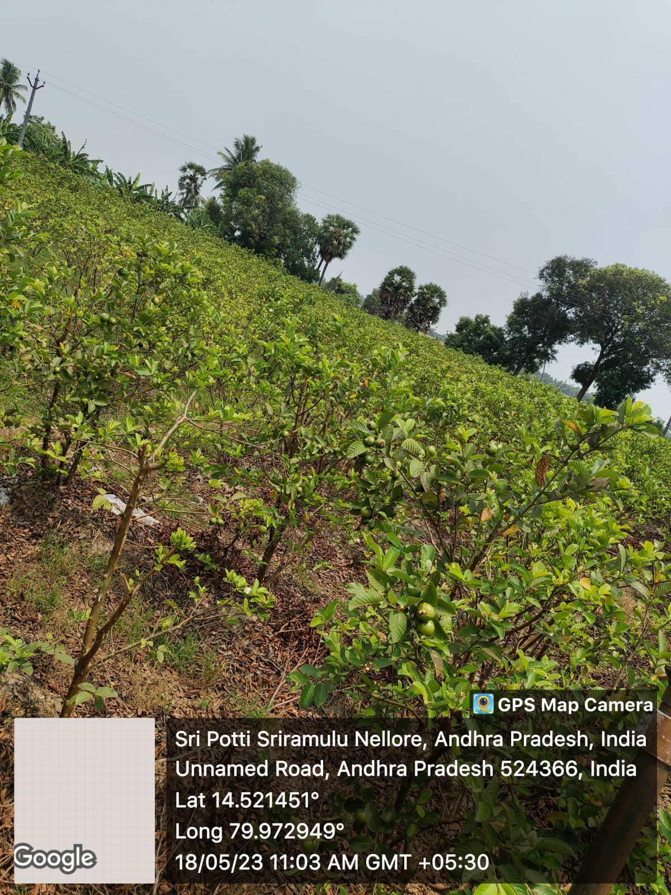